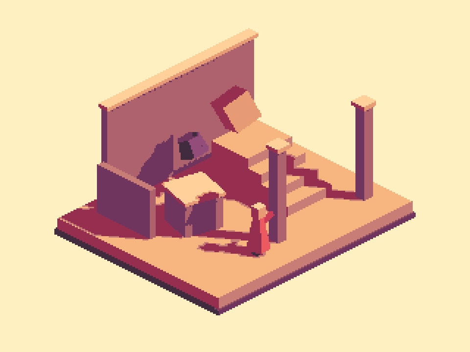
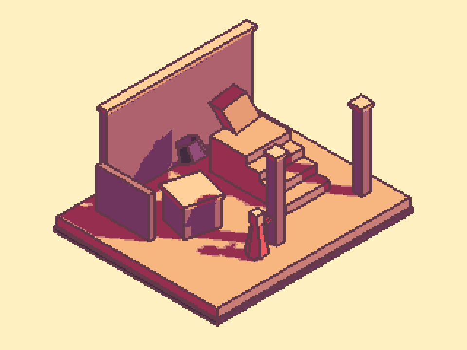

Tracefolio REPORTS & ISSUES
Tracefolio REPORTS & ISSUES아이소매트릭 재작업 — 새 아틀리에 예제와 선명한 윤곽선
검증 대기참고 사진 기준으로 새 장면·재질·팔레트를 만들고 Linear 아웃라인 색 전달을 수정했습니다. 정확 팔레트·균일 격자·재열기 픽셀 동일 검증을 통과했습니다.
작업 결과
새 Isometric Atelier 장면과 프리팹·전용 재질·16색 팔레트를 작성했습니다. 짙은 불투명 윤곽선·각진 면·겹침·크림 배경·균일한 픽셀 격자를 실제 Unity 출력에서 대조했습니다. 문서도 새 예제로 교체했으며, 실제 GUI 입력은 사용자 요청대로 보류합니다.
변경 내용
적용 내용
- 이전 보고의 “예제·9개 언어 다큐먼트를 추가했습니다” 중 카메라 구현과 수치 검사 관찰은 유효합니다. 그러나 예제는 기존 Garden에 카메라를 붙인 것이었고 참고 사진의 선명한 표현 기준을 충족하지 못했습니다. 이를 완전히 새 예제로 정정합니다.
- 새 전용 아틀리에: 단차 지형·계단·벽·기둥·부유 물체·붉은 인물, 새 재질 6개와 메시·팔레트. 기존 Garden/Neon/Sunken 아트 의존성은 없습니다.
- 전용 프리셋: 전체 화면 세로 240픽셀, 단일 격자, 16색 팔레트 강도 1, #643A4A 불투명 윤곽선과 깊이/노멀 면 경계.
- 전체 화면 아웃라인 색/하이라이트를 Linear 작업 색으로 전달하도록 수정했습니다. 선택 오브젝트의 기존 변환과 일관되게 맞췄습니다. 원근/직교·두 시점·네 방향·추적/복원 기능은 유지합니다.
- 새 씬·편집 프리팹·메뉴 진입점·독립 샘플 제어기를 작성했습니다. O: 선, P: 픽셀 처리, 1/2: 투영, Q/E: 회전, Space: 부유 물체 정지, R: 초기화. 기존 Garden의 임시 카메라 연결은 제거하고 원래 518개 객체를 보존했습니다.
- 전용 기능 문서 9언어와 제품·Studio 안내를 갱신했습니다. 새 예제 요구를 기존 장면 설정 변경으로 대체하지 않고 참고와 실제 출력을 대조하도록 프로젝트 템플릿 지침에 통합했습니다.

같은 새 장면 — 윤곽선 끔.

같은 새 장면 — 수정된 불투명 윤곽선 켬, 픽셀 아트 2:1.

같은 새 장면 — 정확한 아이소매트릭 35.264°.
검증
- 실제 Unity 6000.0.83f1 Linear/Built-in에서 렌더·팔레트·격자·씬 저장/임포트/재열기 등 15개 검사와 카메라 수학/추적/복원 회귀 12개 통과. 네이티브 근거
- 최종 사용 색 13개 모두 지정한 16색 팔레트에 정확히 포함: 팔레트 밖 픽셀 0개. 960×720 전체의 3×3 블록 불일치 0개.
- 같은 장면·같은 프레임에서 이전 색 전달 경로를 동등한 입력 변환으로 재현하면 팔레트 밖 52,677픽셀, 수정 경로에서는 0개입니다. 이는 이전 에디터 바이너리 실행이 아닌 통제 재현입니다. 이전 경로 통제 재현
- 새 씬 재열기 후 실제 픽셀이 동일하며 PNG 해시도 일치합니다. AssetDatabase의 실제 씬 의존성에 기존 3개 예제 아트가 없습니다. 기존 Garden의 518개 직렬화 객체 내용도 원본과 동일합니다.
- Runtime·Samples·Editor·Samples.Editor·Development·URP·URP.Editor 7개 어셈블리 컴파일 통과. 전용/제품/Studio 27개 문서의 실제 생성 본문 JS·장 이동·이미지/링크 경로, 공통 CSS/글꼴/파비콘 경로를 검사했습니다. 문서·원본 보존 근거
- 실제 출력은 크림 배경·따뜻한 면·짙은 선·겹침 구분·일정한 픽셀 격자를 기준으로 채팅의 참고 사진과 시각 대조했습니다. 기존 장면 재배치로 대체하지 않았으며 수치 유사도는 산정하지 않았습니다.
- 기존 Unity에서 미리보기 씬만 사용했습니다. 활성 씬·더티 상태·선택·원래 루트 오브젝트를 보존하고 작업 미리보기·렌더 자원을 정리했습니다. 새 Unity 실행·재시작이나 화면 포커스 조작은 하지 않았습니다.
- 이미지는 재가공하지 않은 실제 Camera.Render 출력입니다. Inspector/물리 키/브라우저 화면 검증 근거로 사용하지 않습니다. 교훈은 AGENTS.md·ProductDocumentation.md·TempleteRoadmap.md·PixoraAuthoring.md의 기존 항목에 통합했고 설치된 전역 지침은 변경하지 않았습니다.

남은 사항
- 사용자의 화면 조작 보류 유지: 실제 Inspector의 선택/취소·라이트/다크/언어 표시, Play 물리 키·휠, 실제 브라우저/탭 아이콘은 미실행입니다. 전체 메뉴얼 complete와 final QA 통과로 처리하지 않습니다.
- 이번 실제 렌더 증거는 Windows Unity 6000.0.83f1 Linear/Built-in입니다. Gamma 및 URP의 새 스타일 실제 렌더는 이번 회차에서 재실행하지 않았으며 URP 어셈블리 컴파일과 구분합니다.
- 과거 캡처/실패 이력을 보존했습니다. 공통 색상 수정의 영향을 받을 수 있는 예전 UI/게임 가이드 캡처는 최신 해시로 덮어써 통과 처리하지 않았습니다.
작업 시간
- 제안 시간: 40~60분
- 실제로 완료된 시간: 재작업 시작 2026-11-05 16:40:45 KST. 구현·비화면 QA 완료 2026-11-05 17:16:45 KST(36분). 공개 확인은 별도이며 전체 완료 시각은 GUI QA 보류로 미기록.
- XERJ: 미사용 — Status에서 노드 미실행 확인. PixelCamera는 기존 XERJ 인덱스 범위 밖이므로 rg로 현재 소스·호출·설정을 대조했습니다.